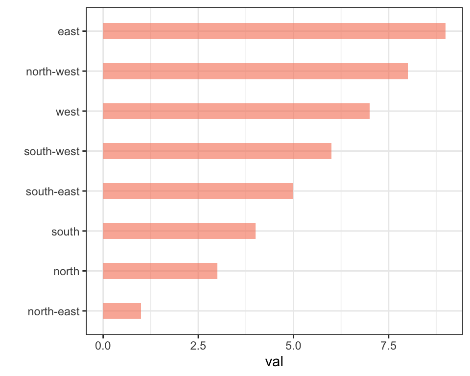
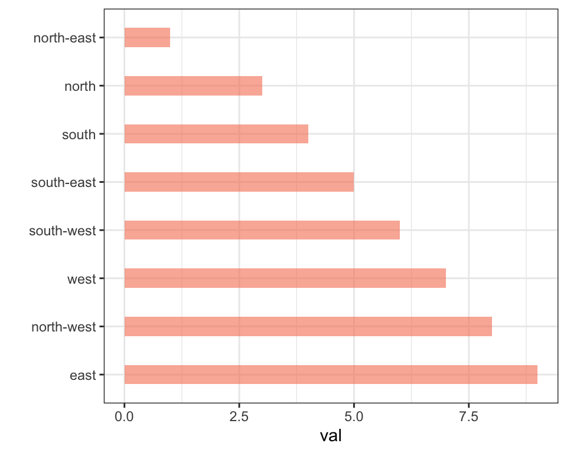
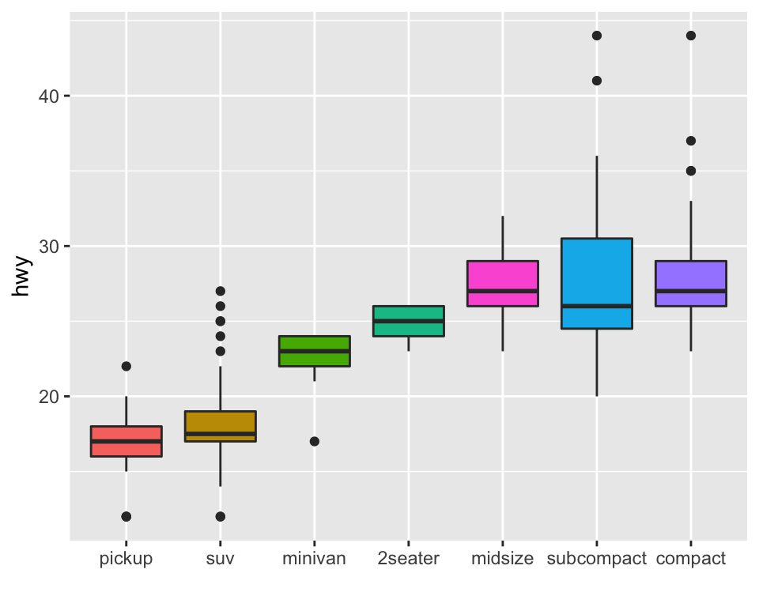
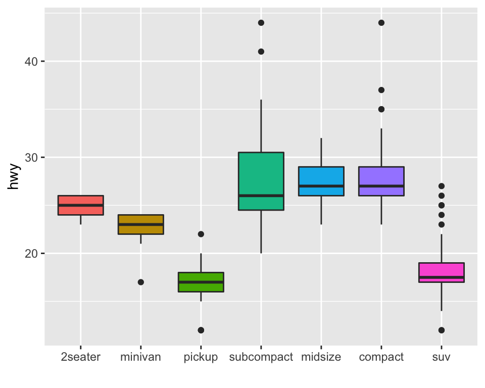
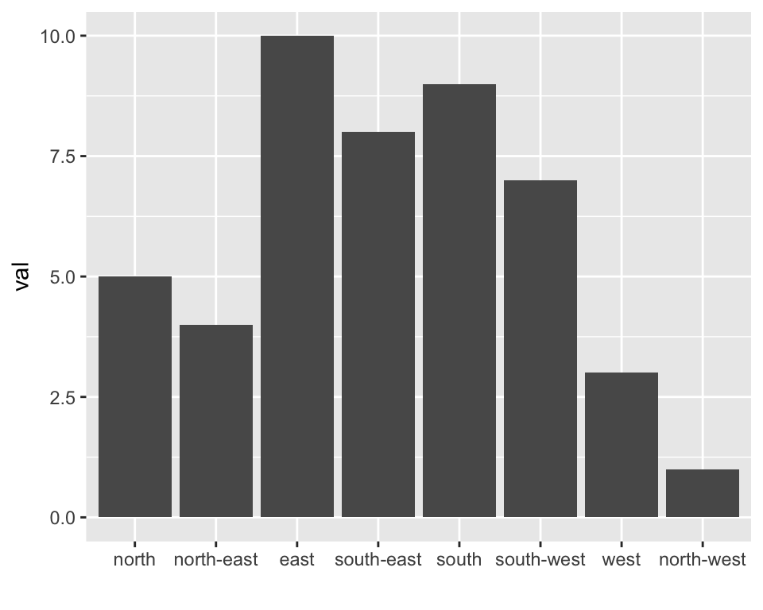
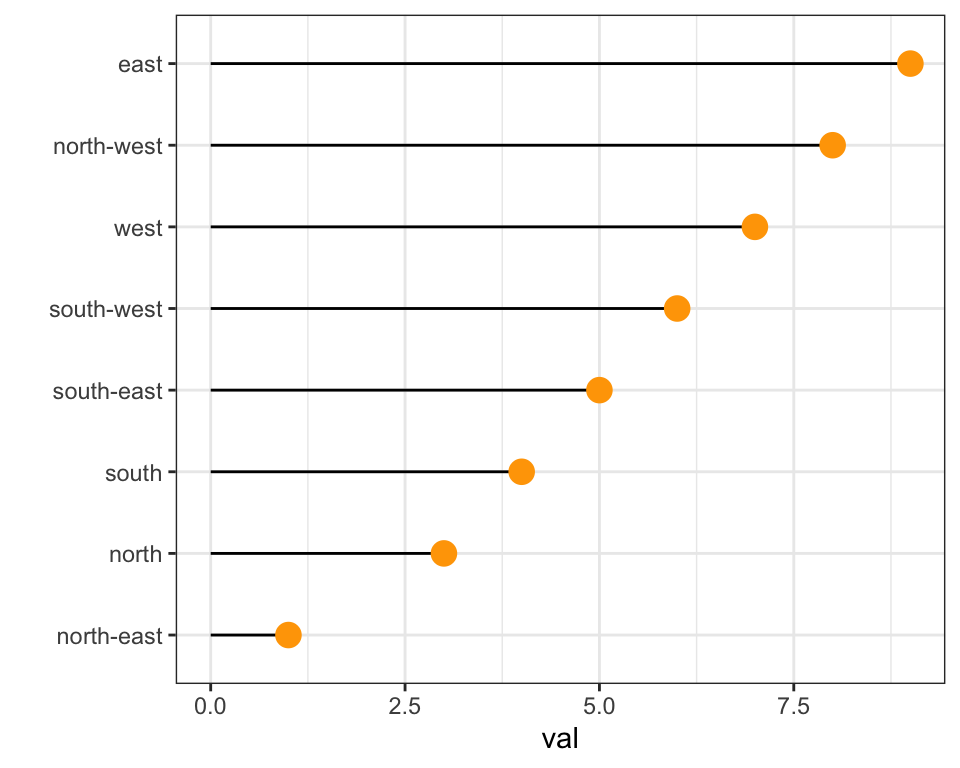
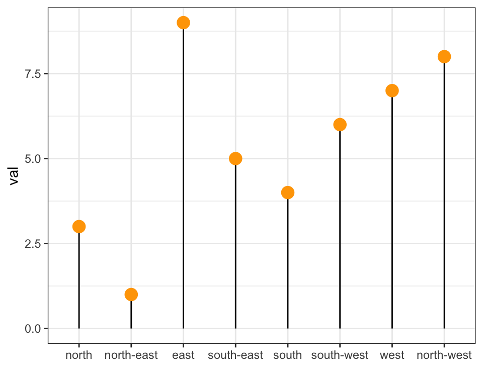
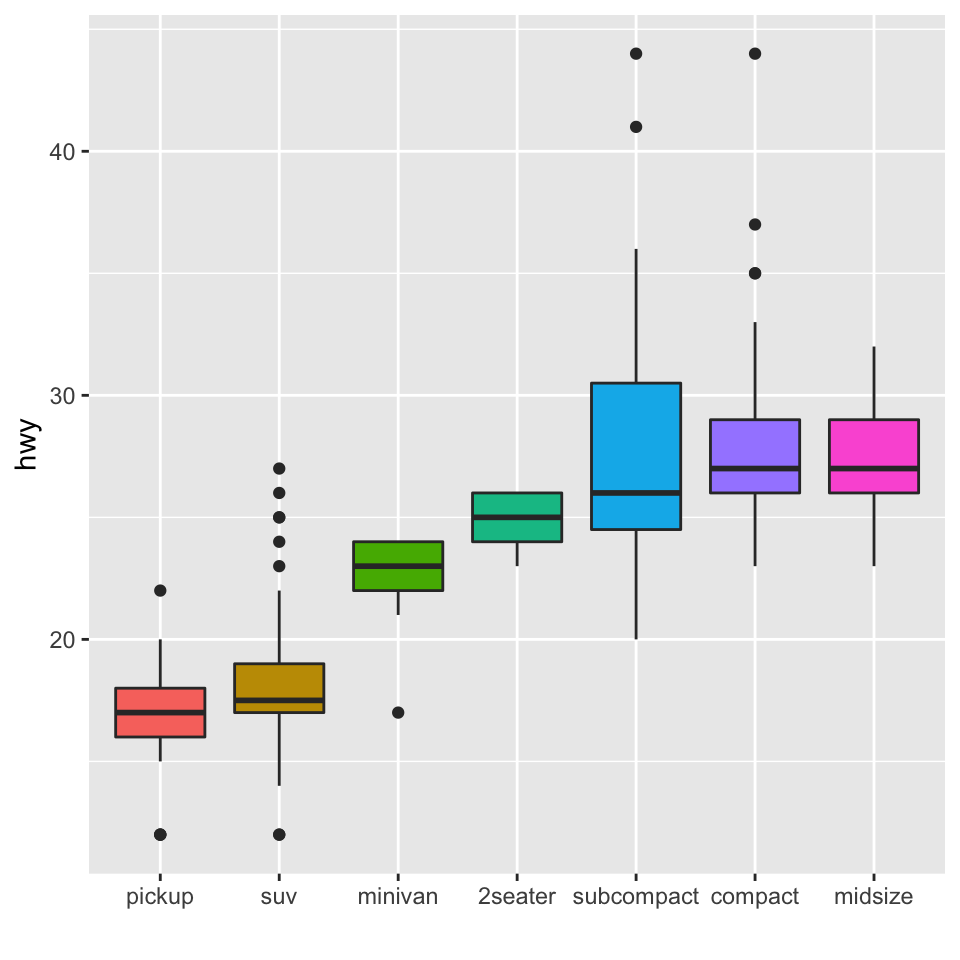

Related chart types

Violin

Density

Histogram

Boxplot

Ridgeline
This post describes how to reorder a variable in a
ggplot2 chart. Several methods are suggested, always
providing examples with reproducible code chunks. Note that
this course on data
manipulation can be helpful here.
Reordering groups in a ggplot2 chart can be a struggle.
This is due to the fact that ggplot2 takes into account the order of the
factor levels, not the order you observe in your data
frame. You can sort your input data frame with sort() or
arrange(), it will never have any impact on your
ggplot2 output.
This post explains how to reorder the level of your factor through several examples. Examples are based on 2 dummy datasets:
# Library
library(ggplot2)
library(dplyr)
# Dataset 1: one value per group
data <- data.frame(
name=c("north","south","south-east","north-west","south-west","north-east","west","east"),
val=sample(seq(1,10), 8 )
)
# Dataset 2: several values per group (natively provided in R)
# mpgforcats library
The
forcats library is
a library from the
tidyverse especially made to
handle factors in R. It provides a suite of useful tools that solve
common problems with factors. The fct_reorder() function
allows to reorder the factor (data$name for example)
following the value of another column (data$val here).
# load the library
library(forcats)
# Reorder following the value of another column:
data %>%
mutate(name = fct_reorder(name, val)) %>%
ggplot( aes(x=name, y=val)) +
geom_bar(stat="identity", fill="#f68060", alpha=.6, width=.4) +
coord_flip() +
xlab("") +
theme_bw()
# Reverse side
data %>%
mutate(name = fct_reorder(name, desc(val))) %>%
ggplot( aes(x=name, y=val)) +
geom_bar(stat="identity", fill="#f68060", alpha=.6, width=.4) +
coord_flip() +
xlab("") +
theme_bw()
If you have several values per level of your factor, you can specify
which function to apply to determine the order. The default is to use
the median, but you can use the number of data points per group to
make the classification:
# Using median
mpg %>%
mutate(class = fct_reorder(class, hwy, .fun='median')) %>%
ggplot( aes(x=reorder(class, hwy), y=hwy, fill=class)) +
geom_boxplot() +
xlab("class") +
theme(legend.position="none") +
xlab("")
# Using number of observation per group
mpg %>%
mutate(class = fct_reorder(class, hwy, .fun='length' )) %>%
ggplot( aes(x=class, y=hwy, fill=class)) +
geom_boxplot() +
xlab("class") +
theme(legend.position="none") +
xlab("") +
xlab("")
The last common operation is to provide a specific order to your
levels, you can do so using the
fct_relevel() function as follow:
# Reorder following a precise order
p <- data %>%
mutate(name = fct_relevel(name,
"north", "north-east", "east",
"south-east", "south", "south-west",
"west", "north-west")) %>%
ggplot( aes(x=name, y=val)) +
geom_bar(stat="identity") +
xlab("")
#p
dplyr only
The mutate() function of dplyr allows to
create a new variable or modify an existing one. It is possible to use
it to recreate a factor with a specific order. Here are 2 examples:
arrange() to sort your data frame, and
reorder the factor following this desired order.data %>%
arrange(val) %>% # First sort by val. This sort the dataframe but NOT the factor levels
mutate(name=factor(name, levels=name)) %>% # This trick update the factor levels
ggplot( aes(x=name, y=val)) +
geom_segment( aes(xend=name, yend=0)) +
geom_point( size=4, color="orange") +
coord_flip() +
theme_bw() +
xlab("")
data %>%
arrange(val) %>%
mutate(name = factor(name, levels=c("north", "north-east", "east", "south-east", "south", "south-west", "west", "north-west"))) %>%
ggplot( aes(x=name, y=val)) +
geom_segment( aes(xend=name, yend=0)) +
geom_point( size=4, color="orange") +
theme_bw() +
xlab("")
reorder() function of base R
In case your an unconditional user of the good old R, here is how
to control the order using the reorder() function
inside a with() call:
# reorder is close to order, but is made to change the order of the factor levels.
mpg$class = with(mpg, reorder(class, hwy, median))
p <- mpg %>%
ggplot( aes(x=class, y=hwy, fill=class)) +
geom_violin() +
xlab("class") +
theme(legend.position="none") +
xlab("")
#p
Related chart types